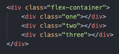
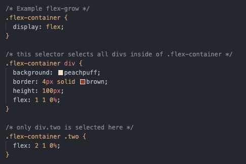

Growing and Shrinking
The flex shorthand
- The "flex" declaration is actually a shorthand for 3 properties that you can set on a flex item.
- These properties affect how flex items size themselves within their container.
- "Shorthand properties are CSS properties that let you set the values of multiple other CSS properties simultaneously."
- "flex" is shorthand for "flex-grow, flex-shrink, flex-basis"
- Ex:"flex: 1;" ≡ "flex-grow: 1, flex-shrink: 1, flex-basis: 0"
Flex-grow
- flex-grow expects a single number as its value, and that number is used as the flex-item's “growth factor”.
- When we applied "flex: 1" to every div inside our container, we were telling every div to grow the same amount. The result of this is that every div ends up the exact same size.
- If we instead add flex: 2 to just one of the divs, then that div would grow to 2x the size of the others.
Example for flex-grow:
- In the following example the "flex"shorthand has values for "flex-shrink" and "flex-basis" specified with their default values.
- Here is the code for this example:
-  
Flex-shrink:
- Shrink is the idea of shrinking the flex items if the items are greater than the parent container
- Ex:if our 3 divs from above had a width declaration like: width: 100px, and .flex-container was smaller than 300px, our divs would have to shrink to fit.
- The default shrink factor is
"flex-shrink: 1", which means all items will shrink evenly.
- f you do not want an item to shrink then you can specify flex-shrink: 0;
- ** You can also specify higher numbers to make certain items shrink at a higher rate than normal.
- An example would be more clear:
- Here's an example. Note that we've also changed the flex-basis for reasons that will be explained shortly. If you shrink your browser window you'll notice that ".two-2" never gets smaller than the given width of 250px (since the flex-shrink is set to 0), even though the flex-grow rule would otherwise specify that each element should be equally sized.
N.B.:
- **An important implication to notice here is that when you specify flex-grow or flex-shrink, flex items do not necessarily respect your given values for width.
- In the above example, all 3 divs are given a width of 250px, but when their parent is big enough, they grow to fill it.
- Likewise, when the parent is too small, the default behavior is for them to shrink to fit. This is not a bug, but it could be confusing behavior if you aren't expecting it.
Flex-basis:
- flex-basis sets the initial size of a flex item, so any sort of flex-growing or flex-shrinking starts from that baseline size.
- The shorthand value defaults to flex-basis: 0%.
- In the previous example, the reason we had to change it flex-basis to auto in the flex-shrink example is that with the basis set to 0, those items would ignore the item's width, and everything would shrink evenly.
- Using auto as a flex-basis tells the item to check for a width declaration (width: 250px).
- N.B.,The actual default value for flex-basis is auto, but when you specify flex: 1 on an element => flex: 1 is equivilant to flex: 1 1 0.
What is flex auto?
- flex: auto is one of the shorthands of flex (i.e., flex: auto == flex-grow: 1, flex-shrink: 1, flex-basis: auto == flex: 1 1 auto.